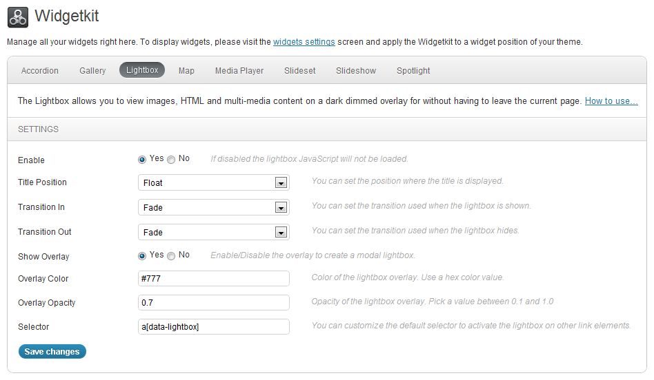
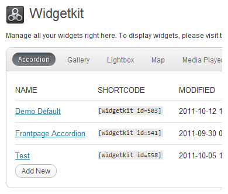

Widgetkit has a simple and easy to use interface. When you open Widgetkit you'll get an overview of all available widgets. Using the navigation bar you can click through them to open the individual settings of a widget. In general Widgetkit provides two types of widgets.
These type of widgets like the lightbox or mediaplayer are globally available can be used on any page. Simply use their HTML markup or attributes to activate them in any article and blog post or in any custom HTML module and Text widget. The widget settings define a selector on which elements the widget should become active. It's comes preset with a default selector which works for all common use case, but you are also able to change it if you need to.
Content type widgets like slidshow, accordion etc. helps you to organize your content in a slick way. You can than include them using shortcodes in your article and blog post or through modules and widgets everywhere on your page even multiple times on the same page.
The Widgetkit Manager gives you a list of all your widgets and related actions like edit, copy and delete.
